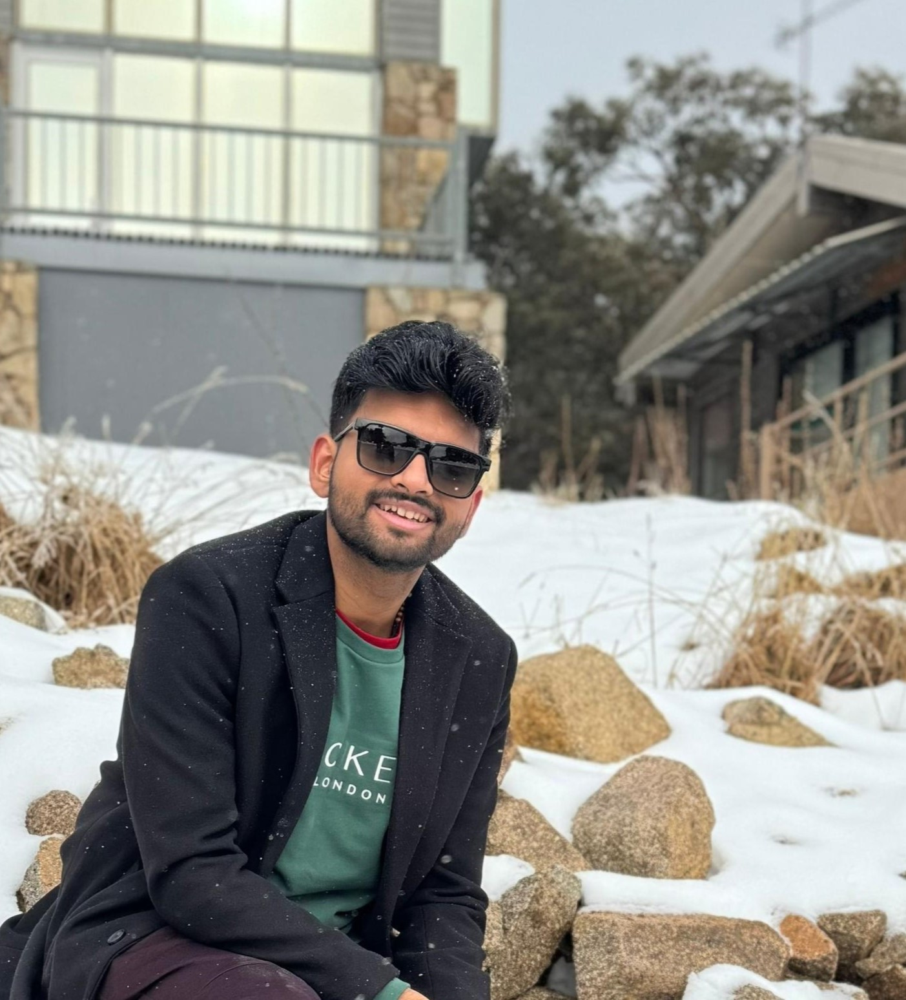

Naturally curious and customer-obsessed, with 3+ years of experience delivering real business value to organisations by blending Big 4 customer consulting experience, proven expertise in data modelling, and scaling cumbersome, error-prone processes using Agentic AI and GenAI.
I discovered a deep passion for data science in high school when I saw the power of Excel macros and advanced features to identify patterns and governance gaps. This inspired me to apply to an IT Audit role in KPMG's governance sector to review current controls, scale the process using data automation, and help 5 high-profile enterprise clients achieve 100% process compliance.
I taught myself how to build data pipelines in SQL and governance dashboards using Power BI. As a result, I was brought into additional projects where I achieved the annual launch of 150+ roaming services (2G to 5G+) across multiple countries and regions including the US, UK, Asia, and APAC — six months ahead of schedule.
For the National Highways Authority of India, I developed 60+ PostgreSQL scripts to explore a large dataset of 10M+ operational records across 11 states to uncover patterns, inefficiencies, and control exceptions to reduce fraudulent behaviour and traffic violations.
To amplify my knowledge and be part of a bigger playing field, I decided to pursue a Business Analytics degree at Monash University. Here, I learnt how to use minimal resources to build real-world applications. I have the ability to not just build reports and dashboards using state-of-the-art GenAI tools, SQL, Power BI, and Python, but also highlight to leadership where the opportunities and risks lie for the business.
In collaboration with Monash University & the University of Warwick
From Melbourne to the Middle East, these are some of the organisations, universities, and clients I have worked with, delivered value to, or connected with across multiple countries.
I'm open to data analyst, business analyst, and AI/ML roles across Melbourne and remotely. If you have an opportunity — or just want to talk data and AI — feel free to reach out.
Send an Email